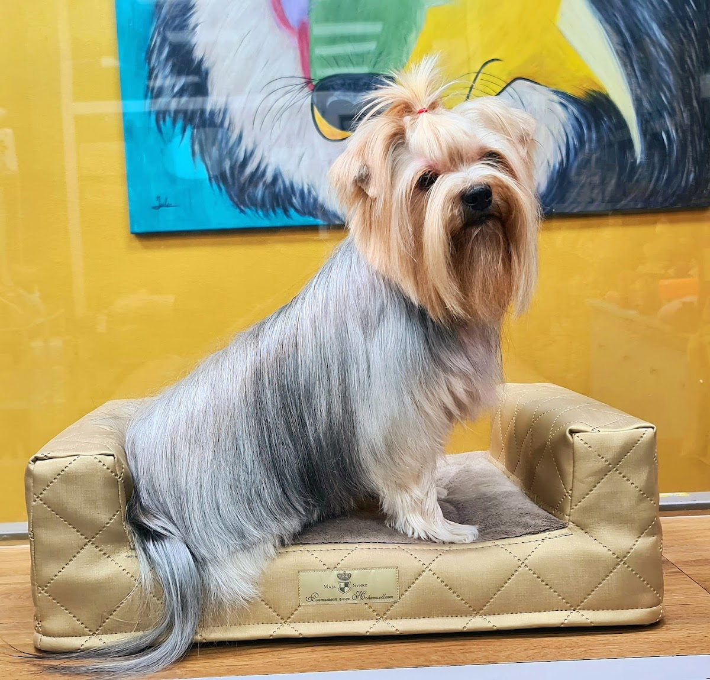
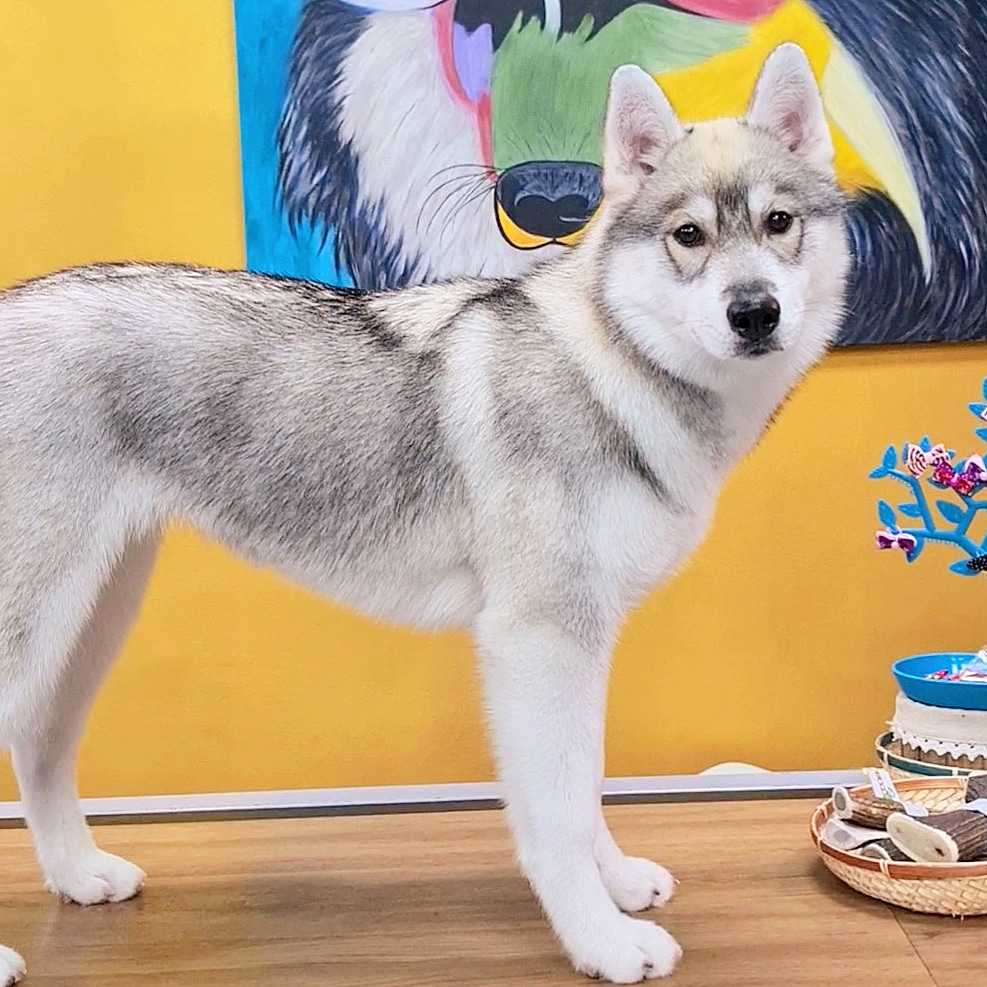
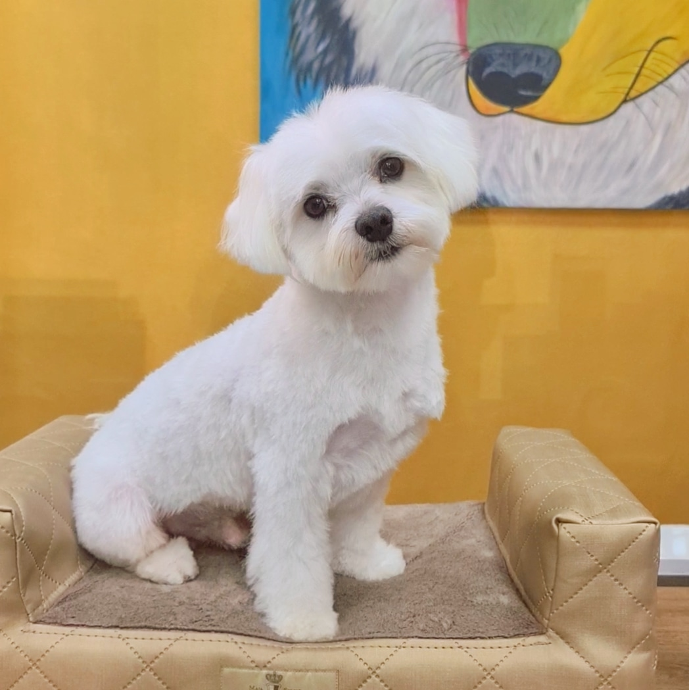
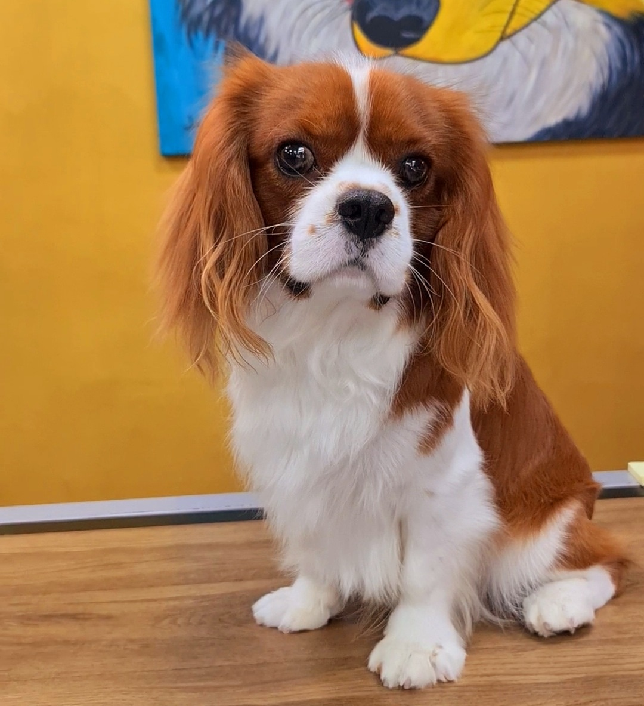
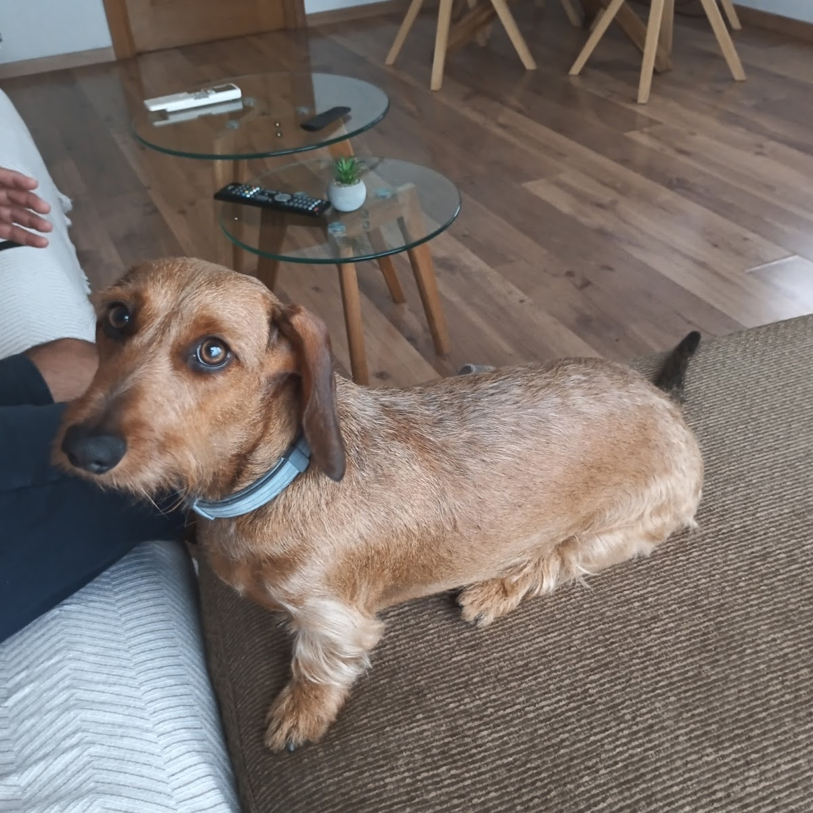
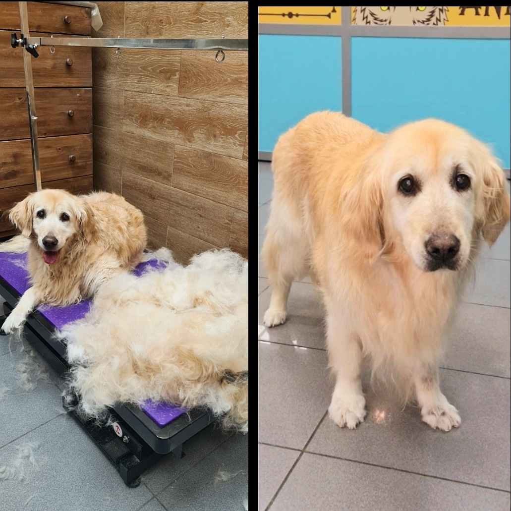
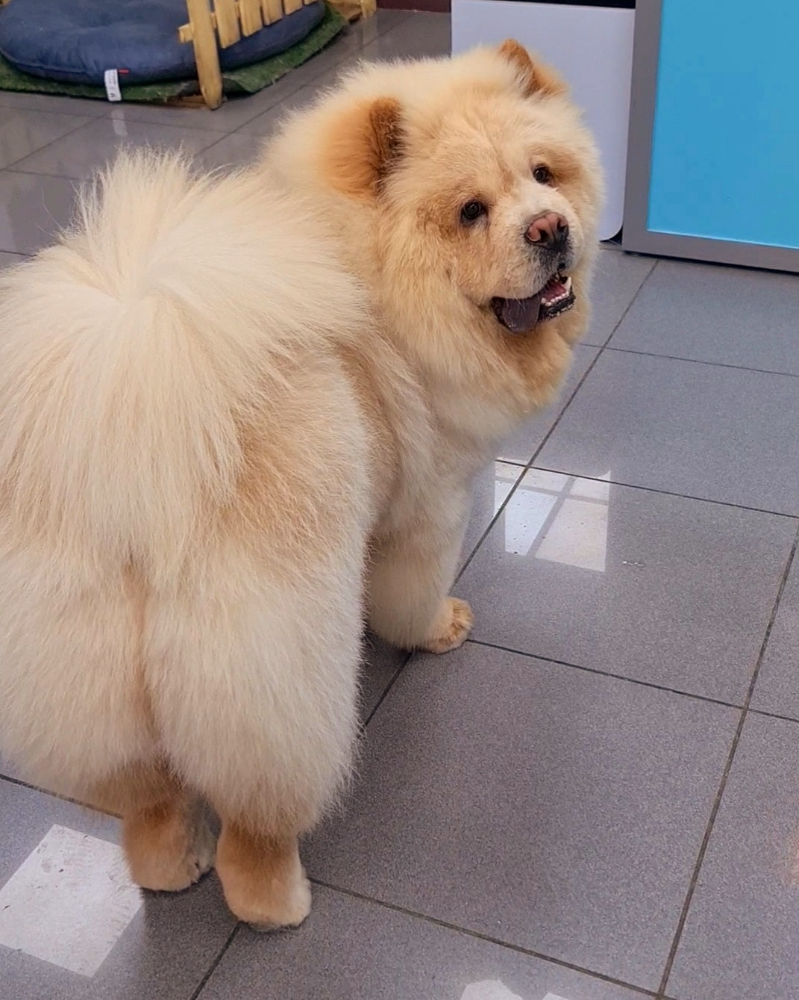
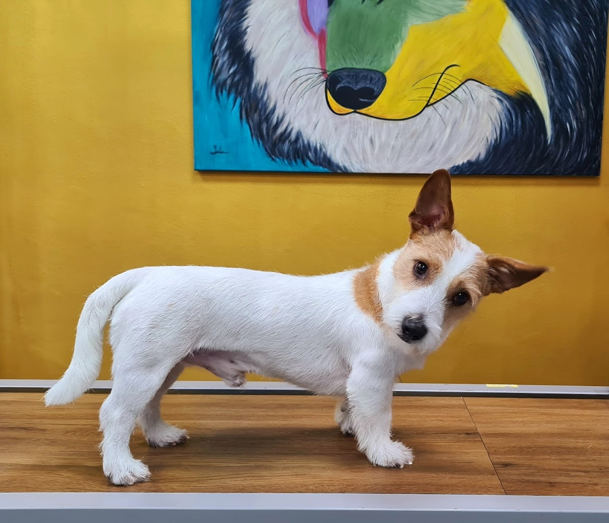

En Animal Spirit cada peludo entra con su nombre y su historia. Tenemos mano izquierda con los miedosos y los que vienen de malas experiencias —y se nota a la salida. Cariño de verdad, profesionales de los pies a la cola.

Animal Spirit · Benimaclet

Cada perro es distinto: su pelo, su carácter y su humor del día. Adaptamos el ritmo y el trato a tu peludo, no al revés.
Tijera y máquina según su raza y su pelo, dejándolo cómodo y guapo. Te lo devolvemos como nuevo —varios clientes lo dicen tal cual.
Baño a su medida, secado sin sustos y productos cuidados con su piel. Sale limpio, oloroso y relajado, no estresado.
Si viene de una mala experiencia o le cuesta dejarse hacer, aquí tenemos paciencia y mano para ganárnoslo. Es nuestra especialidad.
Uñas, oídos, deslanado y esos detalles que marcan la diferencia. Salud y estética van juntas: revisamos mientras lo arreglamos.
Los más miedosos se relajan. "La dueña tiene un don con los animales", lo dicen sus propios clientes.
Tratan a cada peludo como si fuera suyo. No es postureo: es lo que se repite reseña tras reseña.
Familias que vuelven temporada tras temporada con su perro. La confianza no se improvisa, se gana.
Sin centralitas ni esperas. Nos escribes, nos cuentas cómo es tu peludo y buscamos hueco juntos.
Peludos reales que han pasado por Animal Spirit. La diferencia se ve —y, sobre todo, se les nota contentos.





"Llevo muchos años llevando a Thai, nuestra perrita de 13 años, y el trato es excepcional. Ella disfruta muchísimo y le tratan con un cariño increíble. Gracias por vuestra profesionalidad y por dejarle siempre tan tan guapa."
"Estoy muy contento y mi peludo también. Venía de una mala experiencia en otra peluquería y les avisé porque Bao es miedoso. La dueña tiene un don con los animales y enseguida se lo ganó. Yo mismo me sorprendí. Salió precioso y contento."
"Llevé a mi pastor belga negro a Animal Spirit y la experiencia ha sido increíble. Siempre había tenido problemas en otras peluquerías porque es un perro con un carácter complicado y no todo el mundo sabe manejarlo bien. Sin embargo, aquí de..."
"He llevado a mi golden por primera vez y ha sido un acierto, ha salido muy contento. Antes lo llevaba a otra peluquería donde no se dejaba hacer nada, aquí ha salido como nuevo, recomendada. Las fotos son del antes y el después."
"Llevo años llevando a Teo a Animal Spirit y no cambio por nada. Son profesionales como la copa de un pino, tratan a los pequeñines como si fueran de ellas, trato fabuloso. ¡Seguid así!"
Escríbenos por WhatsApp, cuéntanos cómo es tu perro —raza, carácter, si es de los miedosos— y buscamos el mejor hueco para él. Sin compromiso.
Reservar cita por WhatsAppEn pleno barrio de Benimaclet, a la vuelta de la esquina. Ven con tu peludo y compruébalo tú mismo.